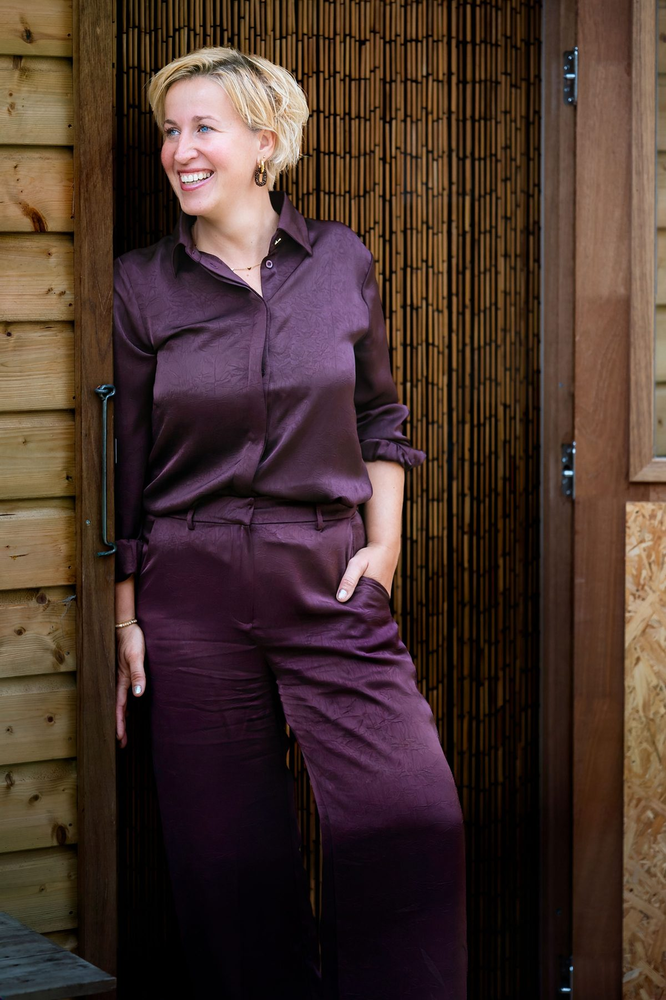
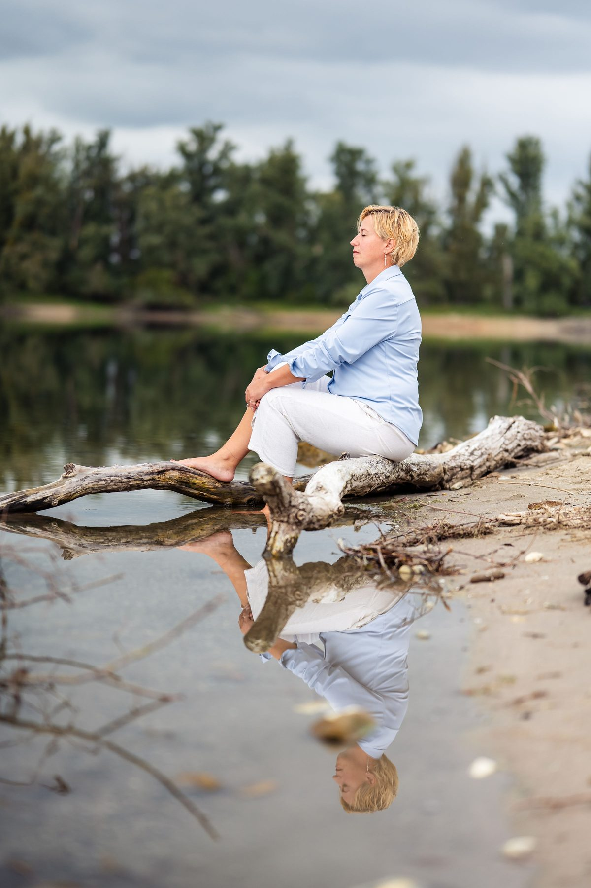
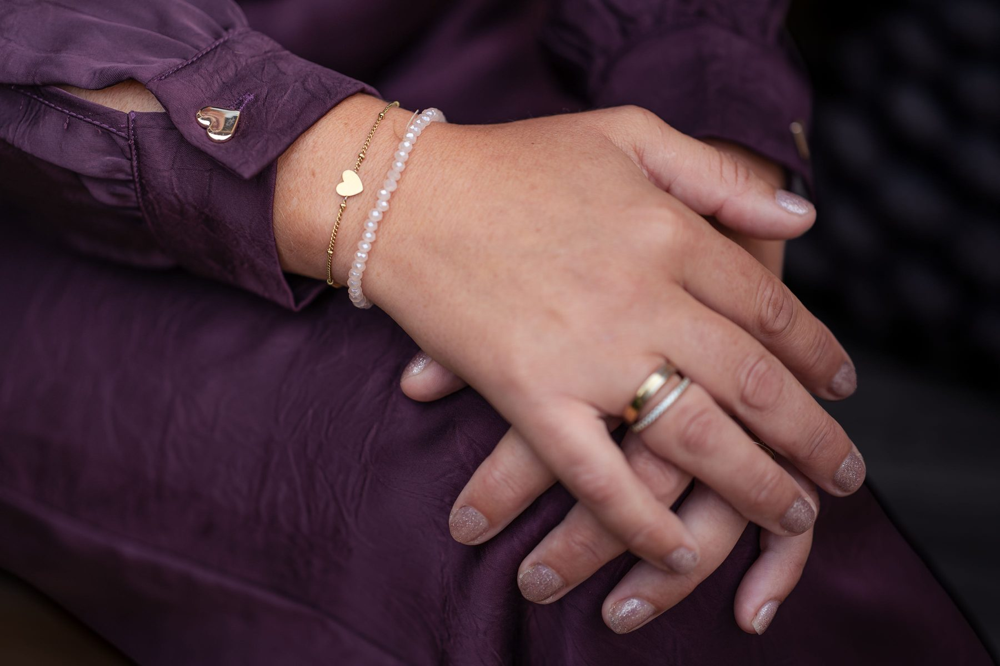

Psychosociale therapie
Inzicht krijgen in je gedachten, gevoelens, ervaringen en terugkerende patronen.
Lees meer over psychosociale therapiePsychosociaal en lichaamsgericht therapeut
Voor (jong)volwassenen die mentaal vastlopen of hun weg zoeken bij verlies en verandering.

Misschien herken je dit…
Je denkt veel na, legt de lat hoog en twijfelt regelmatig aan jezelf. Misschien ben je bang om fouten te maken, voel je je niet goed genoeg of probeer je voortdurend aan de verwachtingen van anderen te voldoen.
Of je merkt dat je steeds verder verwijderd raakt van jezelf. Je vindt het moeilijk om grenzen aan te geven, je gevoelens toe te laten of te ontdekken wat jij werkelijk nodig hebt.
Misschien heb je te maken met stress, angst, somberheid, een burn-out of een ingrijpend verlies. Of loop je steeds opnieuw tegen dezelfde patronen aan, zonder goed te begrijpen waarom.
Soms hebben we al vroeg geleerd om onze gevoelens te onderdrukken, ons aan te passen of sterk te zijn. Wat ooit hielp om onszelf te beschermen, kan ons later in het leven juist belemmeren.
Je hoeft niet precies te weten waarom je vastloopt om de eerste stap te zetten.
Wat gevoeld mag worden, kan weer gaan stromen.
Waarmee kan ik je helpen?
Ik begeleid (jong)volwassenen die psychisch of emotioneel vastlopen of hun weg zoeken bij verlies en verandering. Je kunt bij mij terecht met onder andere:
Bang om het niet goed genoeg te doen? Faalangst, prestatiedruk en de lat hoog leggen.
Lees meer
Stress, angst, somberheid, burn-out of hooggevoeligheid. Aan de buitenkant gaat het best goed, vanbinnen niet.
Lees meerRouw om wat er was, om wat je mist of om wat je dacht dat er zou zijn.
Lees meer
Pleasegedrag, codependentie, narcistische dynamieken en steeds verder van jezelf af komen te staan.
Lees meerMijn werkwijze
In mijn begeleiding staat het opnieuw leren voelen en vertrouwen centraal.
Ik combineer psychosociale en lichaamsgerichte therapie met verschillende methodieken die je helpen om jezelf beter te begrijpen, oude patronen te herkennen en opnieuw verbinding te maken met je gevoel.
Daarbij kijken we niet alleen naar wat je denkt, maar ook naar wat je voelt en ervaart in je lichaam.
Inzicht krijgen in je gedachten, gevoelens, ervaringen en terugkerende patronen.
Lees meer over psychosociale therapieOpnieuw leren luisteren naar de signalen van je lichaam, je gevoelens, behoeften en grenzen.
Lees meer over lichaamsgericht werkenAandacht geven aan oude pijn, onvervulde behoeften en beschermingspatronen die mogelijk in je jeugd zijn ontstaan.
Lees meer over innerlijk-kindwerkJe verschillende innerlijke delen en hun beschermende functies leren herkennen en begrijpen.
Lees meer over delenwerkLeren omgaan met moeilijke gedachten en gevoelens en keuzes maken vanuit wat voor jou werkelijk belangrijk is.
Lees meer over actWaar passend maak ik daarnaast gebruik van hypnotherapie, systemisch werk, mindfulness en andere ervaringsgerichte oefeningen.
Samen kijken we wat bij jou past, vanuit rust, veiligheid en vertrouwen.
Mijn aanbod
Persoonlijke begeleiding bij psychische en emotionele klachten, verlies en persoonlijke ontwikkeling. Met ruimte voor jouw verhaal, gevoelens en behoeften.
Praktische informatieInzicht krijgen in familiedynamieken, terugkerende patronen en de invloed daarvan op jouw leven en relaties.
Lees meer over familieopstellingenWorkshops over zelfzorg, rouw, scheiding, verlies en verandering. Met aandacht voor bewustwording, verbinding en persoonlijke groei.
Bekijk de workshops
Even voorstellen
Ik ben Liesbeth Postma, gediplomeerd psychosociaal en lichaamsgericht therapeut.
Naast mijn professionele kennis en opleidingen neem ik ook mijn eigen doorleefde ervaring mee in mijn werk.
Het leven heeft mij geleerd hoe ingrijpend verlies en verandering kunnen zijn. Hoe het voelt om jezelf kwijt te raken, oude patronen te herkennen en opnieuw te ontdekken wat je voelt en nodig hebt.
Die ervaringen hebben mij laten zien hoe belangrijk het is om gevoelens niet langer weg te stoppen, maar er met zachtheid en begrip naar te leren luisteren.
Ik begeleid vanuit rust, gelijkwaardigheid en vertrouwen, met aandacht voor jouw verhaal en jouw eigen tempo.
Liesbeth
Lees meer over mij
Verandering begint vaak bij het opnieuw contact maken met jezelf.
Door ruimte te geven aan je gevoelens, je behoeften en de delen van jezelf die lange tijd niet gehoord zijn, kan er stap voor stap meer inzicht, rust en vertrouwen ontstaan.
Je hoeft het niet alleen te doen.
Je bent van harte welkom.
Lieve groet, Liesbeth